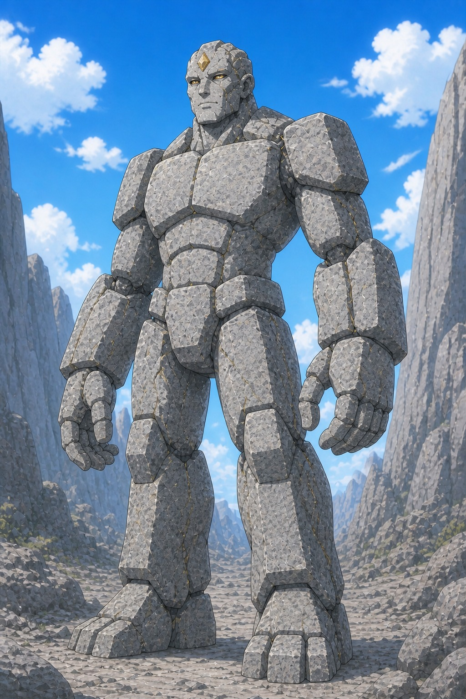
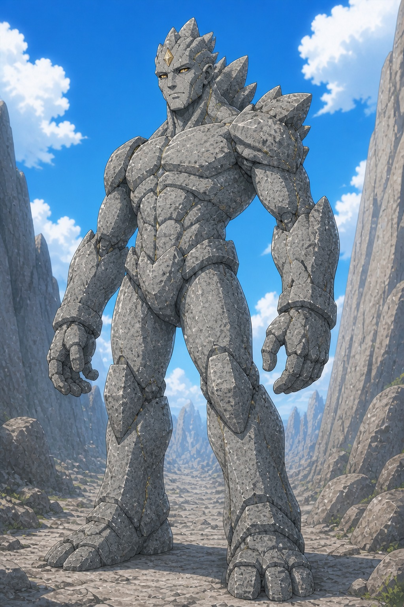
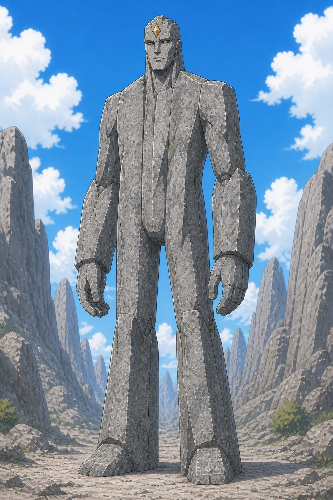
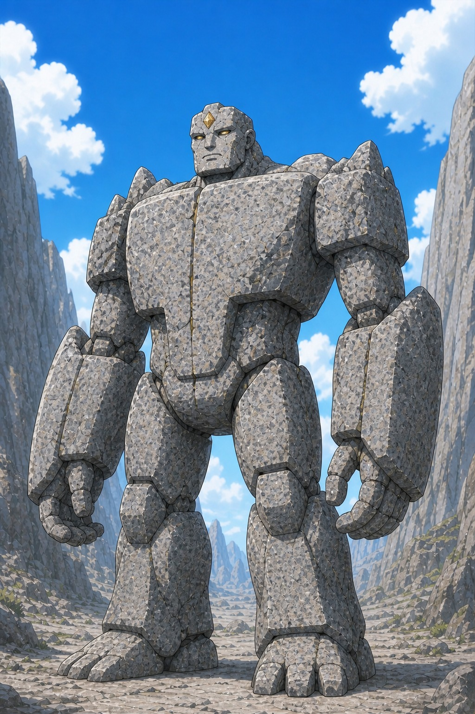
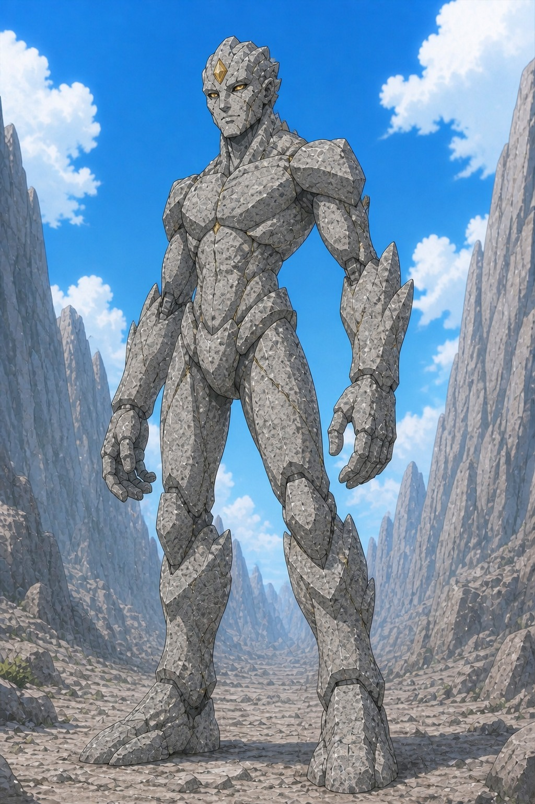
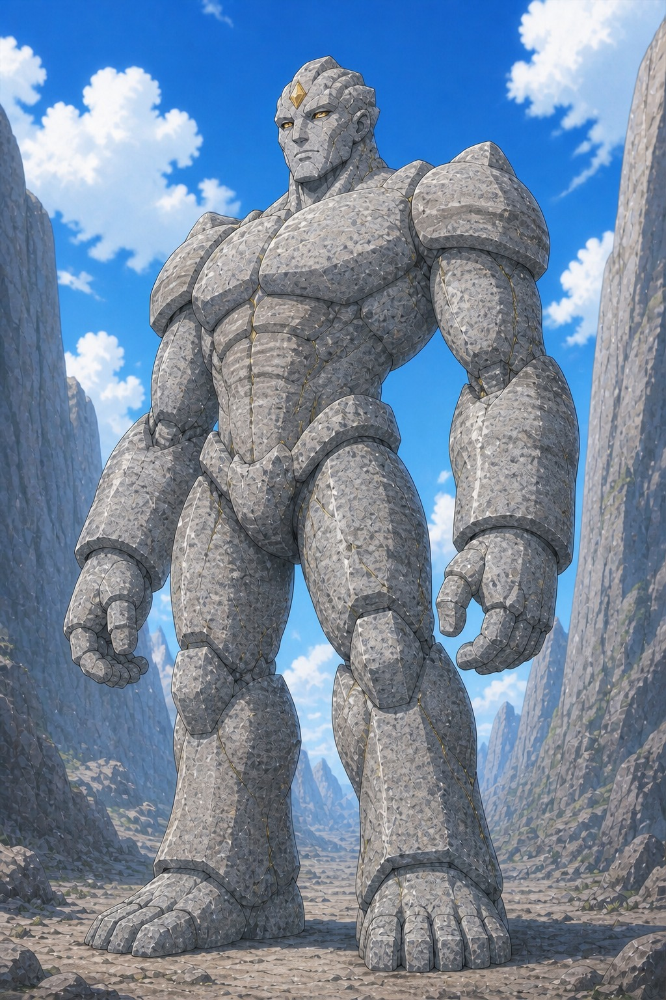
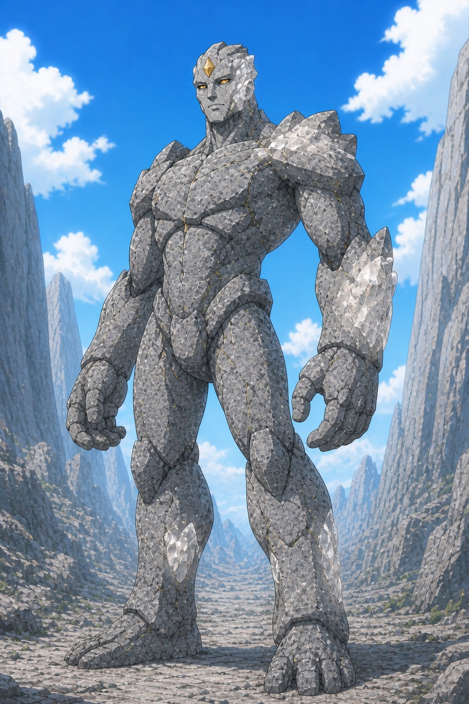
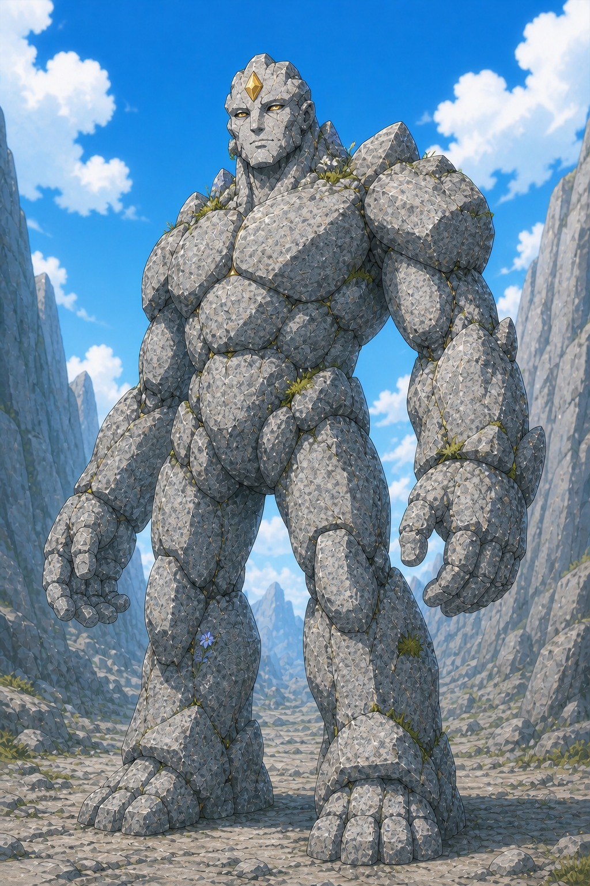
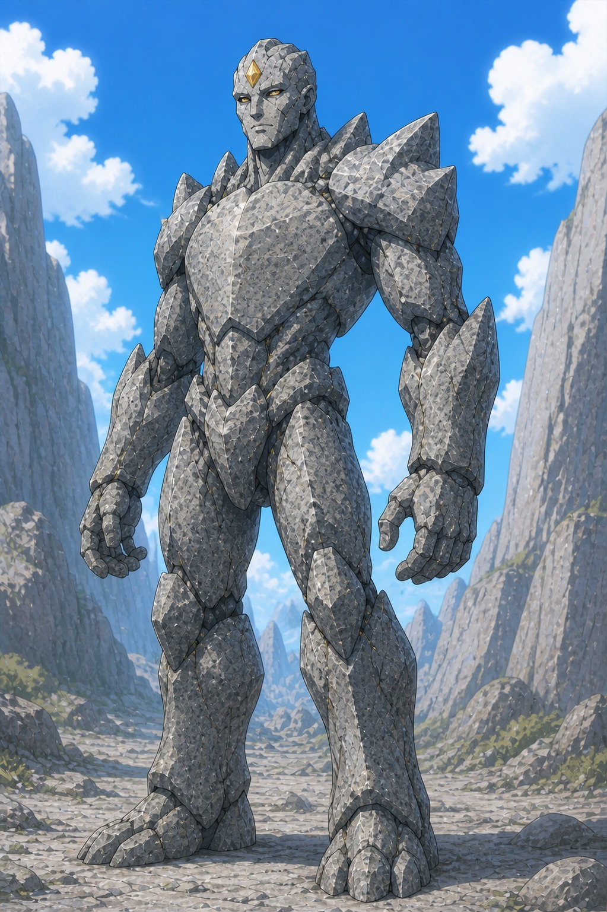

CHARACTER DESIGN LAB
어인 최종안
골렘 후보 10안
어인족 지도자는 사용자가 선택한 10번 심연 군주로 확정했습니다. 골렘은 이전 3안의 비슷한 보디빌더형 구조를 폐기하고, 회색 화강암과 우직한 인상만 유지한 채 실루엣부터 다른 10안으로 다시 설계했습니다.
골렘 대장으로 마음에 드는 번호를 알려주세요.
SELECTED · 10
심연 군주
최종안
심해 낙하 지점과 어인족을 지키는 최고 지도자푸른 피부와 비늘, 왕관처럼 뻗은 지느러미, 흰색에서 코발트로 이어지는 장발과 삼지창을 정본으로 확정했습니다. 인간 해군의 강제 채집에 맞서며 최종전에서는 바다의 보급로를 맡습니다.GOLEM · SELECT ONE
화강암 골렘 대장
신규 후보 10안
모든 후보는 회색 화강암, 이마의 황금 소울스톤과 우직한 인상을 공유합니다. 근육처럼 조각된 가슴과 느끼한 인간형 얼굴을 줄이고, 돌의 결합 방식과 전체 실루엣을 서로 다르게 만들었습니다. 이미지를 누르면 크게 볼 수 있습니다.
01블록 파수꾼각진 석판과 정직한 얼굴의 기본 수호자형

02능선 대장머리와 등에 짧은 돌 능선이 이어지는 지휘관형

03강돌 수호자둥근 화강암 덩어리와 온화한 눈의 친근한 방어형

04모놀리스 수도자긴 수직 석판과 최소한의 얼굴을 지닌 장신형

05성벽 감시자하나의 성벽 같은 몸통과 방패형 팔의 방어 특화형

06채석장 정찰대장가장 날렵하고 기동성이 높은 전투형

07고대 관문 수호자풍화된 수호상과 지층 무늬를 살린 정통 중량형

08석영맥 수호자화강암 사이의 유백색 석영 결정이 특징인 균형형

09살아 있는 산돌 틈의 풀과 꽃이 자연 생명임을 보여주는 공생형

10균형형 공동체장체격·기동성·지도자 실루엣을 중간값으로 맞춘 정본형